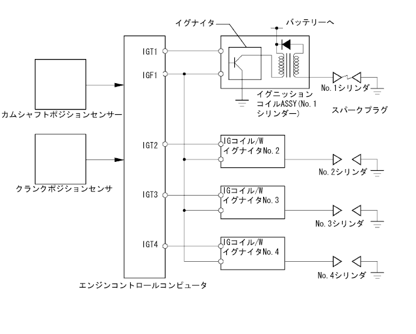
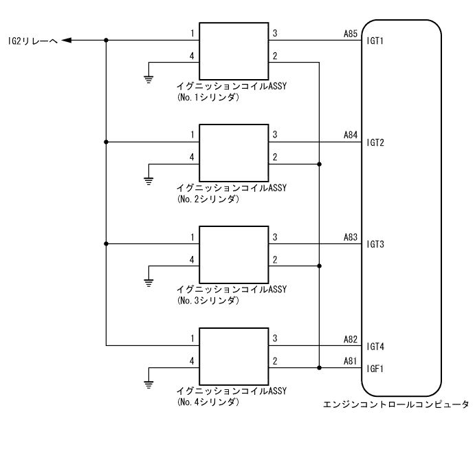
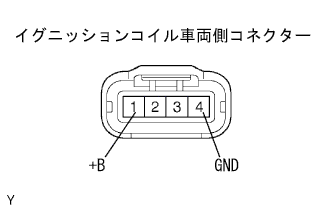
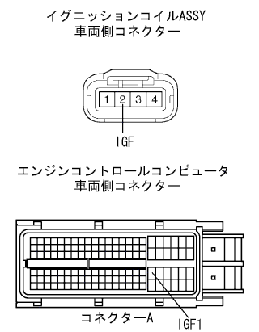
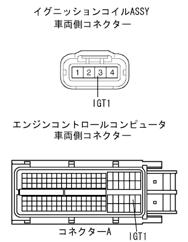

DTC P0351/14 Igniter System 1 |
DTC P0352/15 Igniter System 2 |
DTC P0353/14 Igniter System 3 |
DTC P0354/15 Igniter System 4 |

| DTCNo. SAE/TCCS | DTC Detection Conditions 1. Diagnosis conditions 2. Malfunction status 3. Malfunction duration 4. Other | Inspection Area |
|---|---|---|
| P0351/14 P0352/15 P0353/14 P0354/15 |
|
|

| Step 1 | Inspect Wire Harness or Connector (Power Source Circuit) |
 |
Disconnect the ignition coil assembly connector.
Using SST (Toyota electrical tester), inspect the voltage between the ignition coil assembly vehicle side connector terminals.
| Tester Connection (Terminal Name) | Condition | Standard |
|---|---|---|
| 1(+B) - 4(GND) | IG ON | 11 to 14V |
|
| ||||
| OK | |
| Step 2 | Inspect Wire Harness or Connector (Engine Control Computer - Ignition Coil Assembly) |
ReferenceDisconnect engine control computer connector A and the ignition coil assembly (cylinder No.1) connector.
 |
Using SST (Toyota electrical tester), measure the resistance between the engine control computer and the ignition coil assembly vehicle side connector terminals. (For Terminals of ECU, see)
| Tester Connection (Terminal Name) | Condition | Standard |
|---|---|---|
| A81(IGF1) - 2(IGF) | Always | Below 1 Ω |
| Between A81 (IGF1) and 2 (IGF) - Body ground | Always | 10k Ω or higher |
|
| ||||
| OK | |
| Step 3 | Inspect Wire Harness or Connector (Engine Control Computer - Ignition Coil Assembly) |
ReferenceDisconnect engine control computer connector A and the ignition coil assembly (cylinder No.1) connector.
 |
Using SST (Toyota electrical tester), measure the resistance between the engine control computer and the ignition coil assembly (cylinder No.1) vehicle side connector terminals. (For Terminals of ECU, see)
| Tester Connection (Terminal Name) | Condition | Standard |
|---|---|---|
| A85(IGT1) - 3(IGT1) | Always | Below 1 Ω |
| A85 (IGT1) and 3 (IGT1) - Body ground | Always | 10k Ω or higher |
|
| ||||
| OK | |
| Step 4 | Clear DTC |
Connect SST (TaSCAN) to DLC3.
Turn the IG ON and clear the DTCs following the SST (TaSCAN) screen display. (see)
| NEXT | |
| Step 5 | Perform Simulation Test |
Change the position of the ignition coil assembly (cylinder No.1) and perform a road test.
Turn the IG ON and check the DTCs following the SST (TaSCAN) screen display. (see)
| Result | Proceed to |
|---|---|
| DTC does not change | A |
| A different igniter system DTC is output | B |
)
|
| ||||
| A | ||
| ||